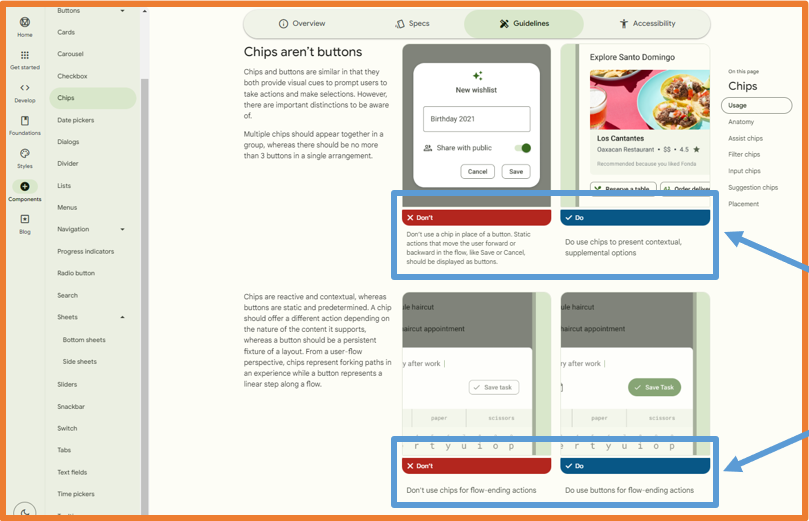
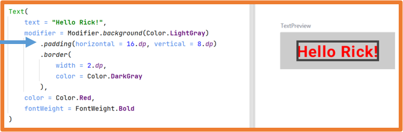
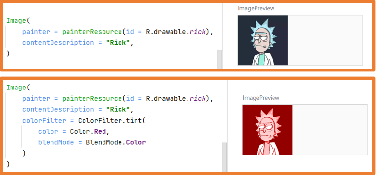
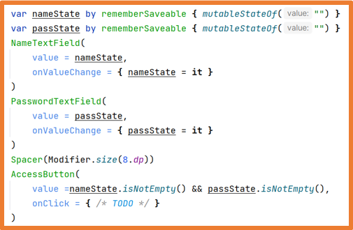

En esta unidad se van a estudiar los diferentes componentes que ofrece Jetpack Compose para diseñar interfaces.
Se estudiarán componentes de presentación e interacción como textos, imágenes, diálogos etc.
También se estudiarán componentes de layout que permiten organizar los elementos de interfaz como columnas rejillas tarjetas
Organizando el código
Antes de comenzar con el estudio de los componentes de Jetpack compose es importante destacar que hay que organizar el código de la aplicación,
por ello hay que tener en cuenta:
Se pueden crear tantos archivos como se quiera.
Si se tienen varias pantallas en la aplicación cada una tendrá su interfaz en un archivo.
El archivo que contenga una clase que extienda de Activity no debe tener componentes en él.
Se debe crear un componente con la base de la aplicación para poder utilizarlo en cualquier sitio.
Todos los archivos que contengan componentes de la interfaz deberían incluirse en la carpeta ui.
Si varios componentes forman parte de una zona/sección de la pantalla se debe crear un componente que los agrupe.
Siempre que un componente se repita con las mismas características de estilo se debe crear un componente personalizado que lo extienda.
Para entender lo anterior se va a modificar el proyecto Contador de clics de la UD3 para cumplir con los puntos anteriores,
además, a partir de ahora se harán indicaciones de dónde situar cada elemento que se estudie.
El primer paso consiste en crear un nuevo elemento Composable llamado MyAppContent:
Botón derecho sobre la carpeta ui -> New -> Kotlin Class/File.
Se indica el nombre del archivo: MyAppContent, se selecciona la opción File y se pulsa Enter.
A continuación, se debe usar ese componente desde la función onCreate y desde la previsualización:
De esta manera, siempre que se cree una pantalla nueva o se quiera previsualizar un componente se debe hacer uso del componente MyAppContent
y se mantendrá el estilo de la aplicación.
Ahora es el turno de la función Content a la cual se le va a cambiar su nombre por ClickCounter.
Se debe cambiar también las llamadas a ella tanto en la función onCreate como en la previsualización.
Para acabar se va a extraer la función ClickCounter a un archivo.
Botón derecho sobre la carpeta ui -> New -> Package.
Se indica el nombre del paquete: screens y se pulsa Enter.
Botón derecho sobre la nueva carpeta screens -> New -> Kotlin Class/File:
Se indica el nombre del archivo: ClickCounter, se selecciona la opción File y se pulsa Enter.
La función ClickCounter y la previsualización ClickCounterPreview se quitarán del archivo
MainActivity.kt y se pondrán dentro del archivo ClickCounter:
ClickCounter.kt
@Composable
fun ClickCounter() {
var times by rememberSaveable { mutableStateOf(0) }
Column(
modifier = Modifier.fillMaxSize(),
verticalArrangement = Arrangement.Center,
horizontalAlignment = Alignment.CenterHorizontally
) {
Text(
// text = "has hecho clic $times veces",
text = stringResource(
R.string.counter_text,
times
),
fontSize = 25.sp
)
Spacer(modifier = Modifier.height(20.dp))
Button(onClick = {
times++
Log.i(
BUTTON_CLICK,
"Se ha pulsado el botón. Valor de times: $times"
)
}) {
Text(
text = stringResource(id = R.string.clickme),
fontSize = 30.sp,
modifier = Modifier.padding(16.dp),
)
}
Spacer(modifier = Modifier.height(20.dp))
Button(
onClick = {
times = 0
Log.i(
BUTTON_CLICK,
"Se ha pulsado RESET"
)
},
shape = RectangleShape,
colors = ButtonDefaults.buttonColors(
containerColor = Color.White,
contentColor = Color.Black
),
border = BorderStroke(
2.dp,
Color.Red
),
enabled = times != 0
) {
Text(
text = stringResource(id = R.string.reset),
fontSize = 15.sp,
modifier = Modifier.padding(2.dp),
)
}
}
}
@Preview(
name = "Light Mode",
showBackground = true,
showSystemUi = true,
)
@Preview(
name = "Dark Mode",
showBackground = true,
showSystemUi = true,
uiMode = Configuration.UI_MODE_NIGHT_YES
)
@Preview(
showBackground = true,
name = "English",
)
@Preview(
showBackground = true,
name = "Spanish",
group = "locale",
locale = "es",
)
@Composable
fun ClickCounterPreview() {
MyAppContent {
ClickCounter()
}
}
De esta manera el proyecto queda más organizado.
Si una pantalla se va a componer de diferentes archivos es recomendable crear un nuevo paquete
(package) con el nombre de la pantalla dentro de la carpeta screens.
Si hay componentes que se comparten entre pantallas es recomendable crear un nuevo paquete llamado common, share o partials
y guardar esos componentes en esa carpeta.
Ejemplo estructura proyecto. Es importante mantener organizado siempre el código.
Componentes de Jetpack Compose
Los componentes de Jetpack Compose se pueden clasificar extraoficialmente en dos clases:
Layout
Permiten organizar los elementos de la interfaz gráfica
Box
Surface
Column
Row
Card
ConstraintLayout
Scaffod
TopAppBar
BottomBar
ModalDrawer
LazyColumn
LazyRow
LazyVerticalGrid
LazyHorizontalGrid
LazyVerticalStaggeredGrid
LazyHorizontalStaggeredGrid
...
Presentación de información
Permiten mostrar al usuario información.
El usuario puede interactuar con ellos.
Text
TextField
Button
Image
Spacer
Switch
Slider
CheckBox
RadioButton
ElevatedButton
Icon
IconButton
SnackBar
BadgedBox
Slider
FloatingActionButton
...
En la unidad anterior ya se han utilizado algunos componentes de Jetpack Compose: Column, Row, Text, Button, Spacer, Surface.
Toda la interfaz de las aplicaciones se va a realizar con:
Componentes que ofrece Jetpack Compose.
Componentes de Jetpack Compose propios creados en base a extensiones y agrupaciones de los componentes que ofrece Jetpack Compose.
Los componentes Jetpack Compose son funciones etiquetadas con @Composable.
Esto se puede observar en los componentes que facilita Jetpack Compose:
Para crear un componente propio se debe crear una función etiquetada con @Composable.
Además, la documentación indica que:
Si la función @Composable no devuelve nada (lo más habitual) su nombre debe comenzar con mayúscula.
Si la función @composable devuelve algo su nombre debe comenzar en minúscula.
Material 3
La última versión de Jetpack Compose utiliza Material Desing 3. Material Design es un estilo de diseño de interfaces de Google.
Todos los componentes Jetpack Compose se pueden encontrar en la documentación oficial
con ejemplo visual y enlace a Material Design 3:
para ver cómo usar el componente y las guías de estilo:
La web de Material Design 3 ofrece información muy importante
de cómo usar los componentes en el apartado Guidelines (guías de estilo):

Componentes Text y BasicText
Los componentes Text y BasicText permiten mostrar una cadena de texto en la interfaz.
La diferencia es que Text utiliza los principios de Material y BasicText no.
Su uso básico ya se ha estudiado en clase y es el siguiente:
Es importante conocer el funcionamiento de los componentes de Jetpack Compose, se pulsa la tecla CTRL y sin soltar se hace clic izquierdo sobre el nombre de la clase.
También funciona teniendo el cursor en el nombre y pulsado CTRL+B.
De esta manera se abre en Android Studio el código del componente clicado.
Esta acción se puede hacer con cualquier clase, función, objeto…
Haciendo ctrl+B sobre el componente podemos ver si definición.
Todas las funciones disponen de documentación KotlinDoc donde se explican los parámetros que aceptan
En la llamada a la función Text, al usar el nombre en los parámetros como recomienda Jetpack Compose, el orden de los mismos se puede alterar.
Cuando se usan los componentes de Jetpack Compose, igual que sucede con cualquier clase que no sea propia, es importante conocer qué parámetros tiene y cómo funciona.
Con el cursor en una clase/función/parámetro/variable se pulsa CTRL+B y Android Studio abre el archivo donde se define para poder consultarlo.
Por ejemplo:
text necesita un String.
modifier necesita un Modifier.
fontWeight necesita un FontWeight.
Navegando por los parámetros con CTRL+B se puede saber el tipo de dato que acepta. Esto también se puede consultar por internet en la documentación oficial.
El único parámetro obligatorio es text que será la cadena a mostrar.
El resto de parámetros se pueden omitir (tienen asignado un valor), en ese caso Kotlin le pondrá los valores por defecto.
Algunos ejemplos de Text con parámetros:
Con el parámetro style se pueden indicar diferentes configuraciones de estilo a la vez.
Aunque se pueden usar los parámetros específicos como color, fontSize…
Modifier
Todos los componentes tienen un parámetro modifier.
Por defecto el parámetro modifier contiene un objeto Modifier con la configuración básica.
El objeto Modifier es un Companion Object con muchas funciones de extensión para modificar los componentes
Además, es de tipo builder por lo que se pueden concatenar las llamadas a las funciones mediante el punto.
El orden de llamada a las funciones es importante y gracias a él se crean diferentes efectos.
Las funciones que contiene Modifier se pueden clasificar extraoficialmente en:
El orden de llamada a las funciones de Modifier altera el comportamiento:

Gracias a Modifier todos los componentes pueden ser clickable:
El orden en el que aparezca clickable también altera el comportamiento.
Existen más manejadores de eventos: onFocusChanged, onKeyEvent…
Si el contenido de un componente no se puede mostrar entero por cualquier razón,
gracias a Modifier se puede indicar con verticalScroll y horizontalScroll
que el contenido sea deslizable para poder visualizarlo totalmente.
Si un componente con un verticalScroll o un HorizontalScroll está ocupando toda la pantalla,
el resto de elementos no se visualizarán a menos que al componente con Scroll se le indique un tamaño.
Si en un elemento se puede hacer scroll vertical, dentro no debería tener un elemento con scroll vertical.
Así, si en un elemento se puede hacer scroll horizontal, dentro no debería haber uno con scroll horizontal.
Más adelante se explicará el uso de rememberScrollState.
Un Button permite lanzar una acción al interactuar con él.
Tiene dos parámetros obligatorios onCLick y content que son funciones lambda,
este último además es el último parámetro definido por lo que se puede extraer de los paréntesis.
El parámetro content es una función lambda que acepta @Composable,
eso significa que en el cuerpo de content se pueden poner componentes Jetpack Compose.
Además, implementa RowScope (ámbito de fila) por lo que se comporta como una fila
y los componentes que se incluyan se añadirán en fila.
Button define algunos de sus valores por defecto en la clase ButtonDefaults
y para algunas modificaciones se debe usar esa clase:
El componente Button tiene diferentes variaciones con estilo predefinido:
Internamente todos estos componentes son del tipo Button.
Componentes propios
Para organizar el código es habitual crear componentes propios que extiendan o agrupen a componentes de Jetpack Compose.
Se puede diseñar un componente propio que combine un Modifier interno y el Modifier que reciba como parámetro.
El lugar donde se llame a then cambiará el comportamiento.
Los componentes propios permiten dividir el código para que esté más organizado.
Es importante que los componentes propios sean lo más pequeños posible teniendo nombres semánticos para que sean auto explicativos.
Además, se pueden crear componentes que agrupen a otros para poder reutilizarlos todos juntos y organizar el código.
Los ejemplos anteriores son perfectos para entender esto.
Componente Spacer
El componente Spacer permite dejar un espacio entre otros componentes y
solo admite el parámetro modifier.
Es recomendable crearse un componente propio que extienda a Spacer para simplificar su uso:
Imágenes
En una aplicación Android las imágenes se tienen que importar previamente en el proyecto o bien conseguirlas de internet.
Las imágenes que se importen al proyecto deben estar en uno de los siguientes formatos: vectorial, jpg, png y webp.
Con respecto a imágenes matriciales (jpg, png y webp) es preferible el uso de imágenes en formato webp
por ello se explicará como convertir imágenes añadidas al proyecto en formato jpg y png a formato webp.
Para añadir imágenes al proyecto se debe abrir el panel Resource Manager en la parte izquierda y
desde él pulsar el botón +.
Para añadir imágenes matriciales (jpg, png y webp) se debe seleccionar la opción Import Drawables.
Una vez seleccionada la imagen aparece la ventana de importación:
Si se quiere se puede seleccionar un QUALIFIER, esto permitiría cargar imágenes de diferentes tamaños según las características del dispositivo.
Por último se debe pulsar el botón Import y la imagen ya estará disponible.
Para añadir imágenes vectoriales, generalmente iconos ofrecidos por Google, se debe seleccionar la opción Vector Asset.
Se abrirá una ventana que permite elegir el icono y configurar su nombre, tamaño, color y opacidad.
Podemos seleccionar entre Clip art, es decir, iconos predeterminados de Google o Local file, si la fuente es externa.
Por último se debe pulsar el botón Finish y la imagen ya estará disponible.
Las imágenes añadidas, sean del tipo que sean, se pueden consultar en la carpeta res.
Si se han seleccionado QUALIFIERS las imágenes aparecerán organizadas según eso QUALIFIERS.
Conversión de imágenes matriciales a webp.
Google recomienda el uso de imágenes webp por estar más optimizadas y ocupar menos espacio.
Con imágenes en formato webp se puede reducir el tamaño de la aplicación hasta un 80%.
El formato webp es compatible a partir de la API 14 con pérdida de calidad y de la API 18 sin pérdida de calidad.
Como en el curso se trabaja con la API 24+ no hay problemas de calidad.
Sobre la imagen en el proyecto se hace clic derecho:
Se eligen las opciones que se necesiten: 100% o Lossless encoding -> máxima calidad.
Se muestra una previsualización donde se puede ver la calidad final, el tamaño final y la diferencia.
También se permite modificar la calidad final.
La imagen del ejemplo a una calidad del 30% no tiene casi pérdida y pasa a ocupar 14,5 KB en lugar de los 421,3 KB originales (un 3,5% del tamaño original).
Para finalizar se pulsa el botón Finish y se convertirá la imagen a formato webp.
Con imágenes más grande se ve con más detalle esa optimización.
Imagen original: 7,9 MB
Imagen final: 400 KB
Se ha reducido al 6,1%
Componente Image
El componente Image permite cargar imágenes importadas al proyecto.
La función tiene dos parámetros obligatorios:
painter: sirve para indicar el recurso a cargar.
contentDescription: descripción de la imagen.

Con la función Modifier.clip() se puede dar forma a cualquier componente.
Si se asigna borde se debe asignar la misma forma que a la función clip.
Si se indica a la imagen que ocupe todo el espacio disponible con el parámetro ContentScale se puede indicar cómo se debe comportar la imagen a la hora de rellenar el espacio:
Con Crop: se ajusta a la dimensión más pequeña del contenedor.
Con la librería Coil y el componente AsyncImage se pueden cargar imágenes de internet.
Se deben dar permisos de acceso a internet a la aplicación, para ello en el archivo del AdroidManifest.xml:
manifest -> AndroidManifest.xml se debe añadir la siguiente línea:
A continuación, se añade la dependencia al archivo build.graddle.kts (Module: app)
y se hace clic en Sync Now en la parte superior derecha.
Cuando finalice la sincronización ya se podrá usar el componente AsyncImage.
Como las previsualizaciones (@Preview) no tienen acceso a internet se debe lanzar la aplicación para ver el resultado.
AsyncImage también tiene el parámetro contentScale para indicar cómo rellena la imagen el espacio disponible.
Se puede dar forma a las imágenes con funciones de AsyncImage y con la función Modifier.clip().
Coil ofrece la función crossfade que indica a la imagen que aparezca poco a poco:
Componente Icon
El componente Icon permite representar un icono en la aplicación, es similar a Image
pero formando parte de Material Design.
Solo permite imágenes vectoriales o rasterizadas (convertidas a webp).
Solo se mostrará con un color.
Su tamaño por defecto es de 24dp pero soporta los siguientes tamaños:
En el ejemplo al usar una imagen como Icon se pierden los colores.
Con la clase Icons se pueden utilizar los iconos del sistema.
Lo más habitual es usar los iconos vectoriales de Material Design.
Android Studio solo carga por defecto algunos iconos.
Si se quiere tener disponible todo el paquete de iconos se debe añadir la siguiente dependencia al archivo build.graddle.kts (Module: app):
Recuerda pulsar Sync Now tras añadir la dependencia.
Una vez añadida la dependencia ya están disponibles todos los iconos .
En la clase Icon existen subclases de iconos:
Default: como usar Filled.
Filled: icono relleno del mismo color.
Outlined: icono solo con los bordes.
TwoTone: icono con dos colores.
Sharp: icono con las esquinas anguladas.
Rounded: icono con las esquinas redondeadas.
Con el parámetro tint se puede cambiar la tonalidad del icono.
Componente Badge
El componente Badge permite mostrar información dinámica como el número de mensajes pendientes.
Un Badge solo debería tener un icono o un texto corto.
Componente BadgedBox
El componente BadgedBox permite mostrar información dinámica como el número de mensajes pendientes sobre otro elemento como un icono.
Se usan habitualmente en barras de navegación.
Componentes Divider
Existen tres componentes de tipo Divider:
Divider: disponible hasta material3 v1.1.1, obsoleto en material3 v1.2.0.
HorizontalDivider: disponible en material3 v1.2.0.
VerticalDivider: disponible en material3 v1.2.0.
Como la versión 1.2.0 se encuentra en Alpha, aún se puede utilizar el componente Divider.
Si se quiere usar HorizontalDivider y VerticalDivider
hay que actualizar la dependencia en build.gradle.kts (Module) y sincronizar.
Divider (línea horizontal), HorizontalDivider y VerticalDivider
dibujan una línea que permite separa elementos generalmente en filas (Row) y columnas (Column).
Los tres componentes disponen de los mismos parámetros: modifier, thickness y color.
Crea un proyecto en Android Studio llamado ProfileTuNombre.
Utilizando los componentes vistos hasta este momento en la unidad, diseña una pantalla a modo de perfil de usuario de una red social donde aparezca:
Tu nombre
Una foto tuya (tipo carnet)
Una lista de hobbies o gustos que delante de cada elemento tenga un icono
Un botón para seguir o dejar de seguir
Dos imágenes pequeñas de lo que quieras
Un botón con un icono para dar a me gusta o quitar el me gusta en cada una de las imágenes
Un BadgedBox Con el icono de un sobre que indicará la cantidad de mensajes pendientes de leer
Un botón debajo del todo con un + que al pulsarlo se aumentará la cantidad de mensajes
Conceptos
Composición y recomposición
La composición y la recomposición son un comportamiento habitual en las interfaces de usuario declarativas.
Composición: ejecución por primera vez de una función de composición (@Composable) -> pintar un componente en la interfaz.
Recomposición: ejecución por segunda o más vez de una función de composición (@Composable)
-> repintar la interfaz pintando solo los componentes afectados.
Si en tiempo de ejecución se modifica un componente, ese componente se recompone.
De esta manera la interfaz de usuario siempre tiene la última versión del componente.
Estados
En Jetpack Compose un estado es una variable conectada al estado de la aplicación.
Si durante la ejecución de la aplicación un estado (variable conectada al estado de la aplicación) cambia su valor,
las partes de la interfaz afectadas se recomponen (se vuelven a pintar).
En el ejemplo de la UD3 "Contador de clics" se utilizó un estado para recomponer la interfaz al pulsar un botón.
mutableStateOf: indica que la variable es un estado
(variable conectada al estado de la aplicación).
Si esta variable cambia su valor se deben recomponer las funciones @Composable que la utilicen.
El problema es que cuando se vuelve a ejecutar la función @Composable el estado volverá a tener el valor inicial.
Para solucionar esto se usa:
remember: indica a Android que una variable se recuerde en la recomposición.
rememberSaveable: lo anterior y también que se recuerde al destruir y crear la Activity.
Los estados se pueden crear con = pero esto conlleva que para acceder al valor del estado se debe usar .value.
Para facilitar el uso de estados se creo el delegado by,
visto en los ejemplos, que permite acceder al valor del estado con el propio nombre de la variable.
Cuando se explicó el parámetro modifier,
se indicó que si el contenido de un componente no cabe en la pantalla se pueden usar los modificadores verticalScroll
y horizontalScroll para deslizar y poder alcanzar todo el contenido.
Para esto se hizo uso de rememberScrollState.
Esta función crea un estado con rememberSaveable por lo que,
el estado del scroll se recordará tanto al cambiar la orientación como al cambiar la configuración:
Gracias a la recomposición es muy sencillo cambiar la apariencia de la interfaz gráfica:
Otro ejemplo
Componentes para introducir información
A continuación, se van a estudiar una serie de componentes Jetpack Compose que permiten recoger información del usuario.
Estos componentes se suelen utilizar en formularios o en pantallas de ajustes.
Como estos componentes cambian conforme el usuario introduce los datos o los selecciona, se deben usar estados para su correcto funcionamiento.
Componente TextField
Los componentes TextField permiten al usuario introducir datos desde el teclado del dispositivo.
Existen tres componentes TextField:
BasicTextField: campo de texto básico.
TextField: utiliza los principios de Material.
OutlinedTextField: como TextField pero con un borde predefinido en el parámetro shape.
Como se estudió anteriormente es importante conocer los parámetros que admiten los componentes.
Todos los parámetros que aceptan una función lambda permiten que se puedan realizar acciones.
Si además la función lambda es @Composable, dentro se podrán incorporar otros componentes.
Ejemplo con dos campos, uno para el correo y otro para la contraseña:
Ejemplo con dos campos, uno para el correo y otro para la contraseña
Ejemplo de campo contraseña que permite ver el texto escrito:
Ejemplo de campo contraseña que permite ver el texto escrito
Ejemplo en el que el botón solo se activa si los campos tienen datos:
Gracias a los estados y la recomposición no es necesario un if para activar el bótón:
El parámetro keyboardOptions permite indicar cómo será el teclado que se muestra
El parámetro keyboardActions permite indicar la acción que se ejecutará al pulsar el botón (imeAction).
State Hoisting
Como se estudió a principio de la unidad, es muy habitual crear componentes propios que envuelven uno o más componentes Jetpack Compose.
En este punto se pueden dar dos opciones:
Componente stateless: componente propio en el que no se declara un estado.
Componente stateful: componente propio en el que se declara un estado.
Stateless Stateful
Desde el exterior de un componente statefulno se tendrá acceso a su estado.
Imaginemos un formulario en el que todos los componentes son propios y stateful,
¿Cómo se podría acceder a los datos que ha introducido el usuario?
En el ejemplo anterior, se han añadido los componentes directamente y no existe ese problema, pero
¿y si se hubieran extraído los componentes a componentes propios como se recomienda?
Extrayendo compomentes a componentes propios
Para solucionar esto se utiliza el State Hoisting (elevación de estado) para poder acceder al estado desde el exterior.
Mediante el State Hoisting el estado no se declara dentro del componente si no en el componente más externo en el que se vaya a utilizar.
Al declarar el estado fuera del componente, este se convertirá en stateless.
Las recomendaciones son que todos los componentes sea stateless en la medida de lo posible.
Si un componente utiliza un estado y este estado no se necesita en el exterior, en ese caso el componente puede ser stateful.
La técnica del State Hoisting consiste en eliminar el estado de un componente stateful (y así convertirlo en stateless)
y sustituirlo por dos parámetros que se le deberán proporcionar al utilizarlo:
Uno para proporcionar el valor al componente
Otro que es una lambda para modificar ese valor.
Esta técnica ya se utiliza en el componente TextField
Ejemplo anterior aplicando State Hoisting:
Componentes stateless  Uso de componentes
Se puede realizar de una manera más limpia usando = en lugar de by.
Un solo estado Varios estados
Componente Switch
Los Switch son interruptores que se utilizan para activar y desactivar funciones.
Son habituales en las preferencias.
El parámetro thumbContent permite añadir un icono al interruptor.